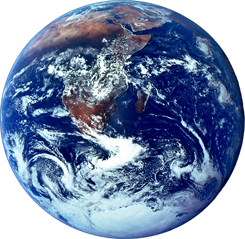
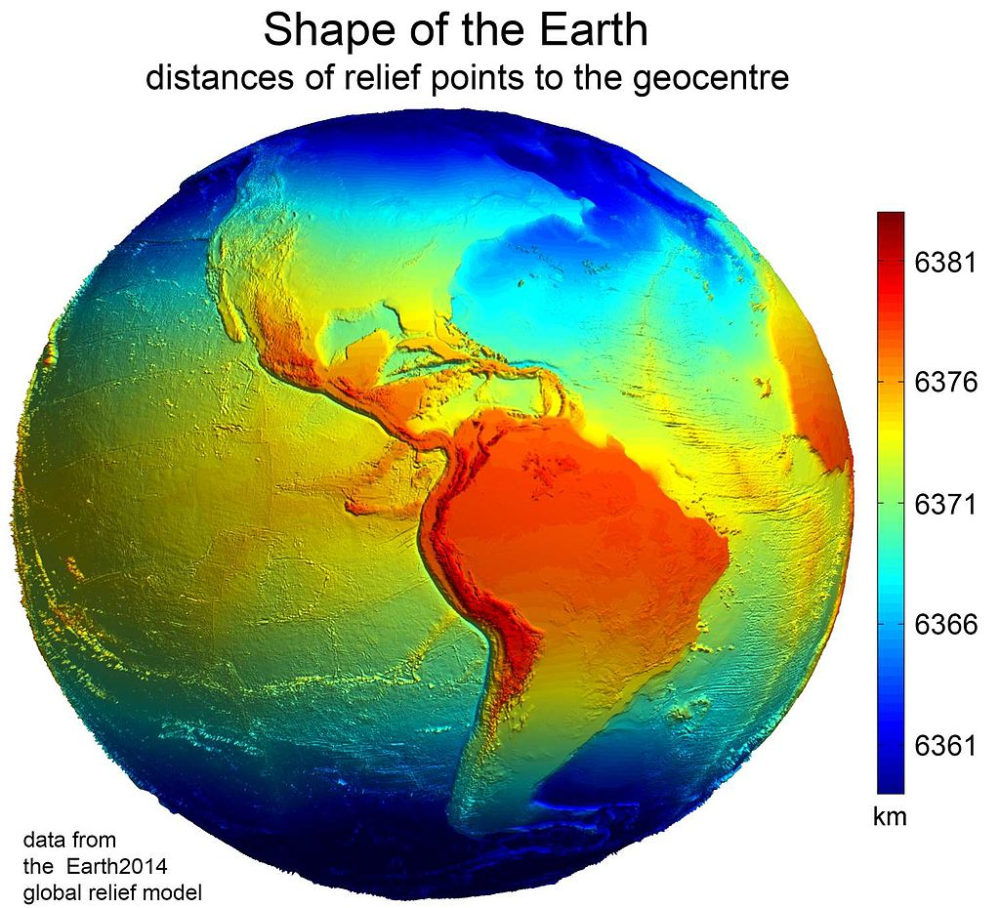

Earth is the third planet from the Sun and the only object in the Universe known to harbor life. According to radiometric dating and other sources of evidence, Earth formed over 4 billion years ago. Earth's gravity interacts with other objects in space, especially the Sun and the Moon, Earth's only natural satellite. Earth revolves around the Sun in 365.26 days, a period known as an Earth year. During this time, Earth rotates about its axis about 366.26 times. Earth's axis of rotation is tilted, producing seasonal variations on the planet's surface. The gravitational interaction between the Earth and Moon causes ocean tides, stabilizes the Earth's orientation on its axis, and gradually slows its rotation. Earth is the densest planet in the Solar System and the largest of the four terrestrial planets.

Name and etymology
The modern English word Earth developed from a wide variety of Middle English forms, which derived from an Old English noun most often spelled eorðe. It has cognates in every Germanic language, and their proto-Germanic root has been reconstructed as *erþō. In its earliest appearances, eorðe was already being used to translate the many senses of Latin terra and Greek γῆ (gē): the ground, its soil, dry land, the human world, the surface of the world (including the sea), and the globe itself. As with Terra and Gaia, Earth was a personified goddess in Germanic paganism: the Angles were listed by Tacitus as among the devotees of Nerthus,[48] and later Norse mythology included Jörð, a giantess often given as the mother of Thor. Originally, earth was written in lowercase, and from early Middle English, its definite sense as "the globe" was expressed as the earth. By early Modern English, many nouns were capitalized, and the earth became (and often remained) the Earth, particularly when referenced along with other heavenly bodies. More recently, the name is sometimes simply given as Earth, by analogy with the names of the other planets.[39] House styles now vary: Oxford spelling recognizes the lowercase form as the most common, with the capitalized form an acceptable variant. Another convention capitalizes "Earth" when appearing as a name (e.g. "Earth's atmosphere") but writes it in lowercase when preceded by the (e.g. "the atmosphere of the earth"). It almost always appears in lowercase in colloquial expressions such as "what on earth are you doing?"
Physical characteristics
The shape of Earth is approximately oblate spheroidal. Due to rotation, the Earth is flattened along the geographic axis and bulging around the equator. The diameter of the Earth at the equator is 43 kilometres (27 mi) larger than the pole-to-pole diameter.[93] Thus the point on the surface farthest from Earth's center of mass is the summit of the equatorial Chimborazo volcano in Ecuador. The average diameter of the reference spheroid is 12,742 kilometres (7,918 mi). Local topography deviates from this idealized spheroid, although on a global scale these deviations are small compared to Earth's radius: The maximum deviation of only 0.17% is at the Mariana Trench (10,911 metres (35,797 ft) below local sea level), whereas Mount Everest (8,848 metres (29,029 ft) above local sea level) represents a deviation of 0.14%. In geodesy, the exact shape that Earth's oceans would adopt in the absence of land and perturbations such as tides and winds is called the geoid. More precisely, the geoid is the surface of gravitational equipotential at mean sea level. Earth's mass is approximately 5.97×1024 kg (5,970 Yg). It is composed mostly of iron (32.1%), oxygen (30.1%), silicon (15.1%), magnesium (13.9%), sulfur (2.9%), nickel (1.8%), calcium (1.5%), and aluminium (1.4%), with the remaining 1.2% consisting of trace amounts of other elements. Due to mass segregation, the core region is estimated to be primarily composed of iron (88.8%), with smaller amounts of nickel (5.8%), sulfur (4.5%), and less than 1% trace elements.
